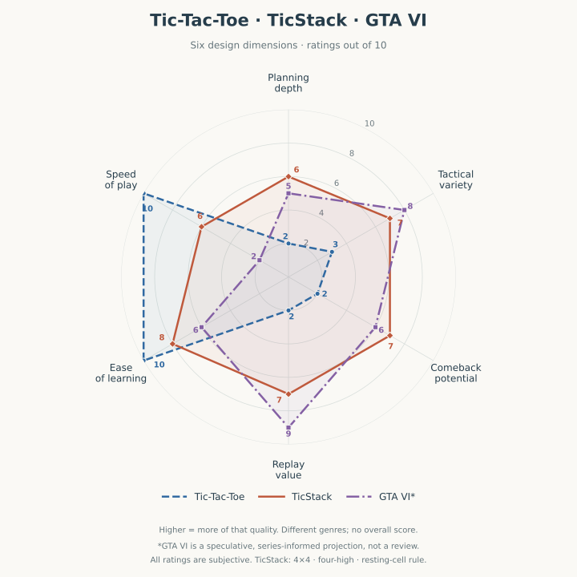

A familiar goal, a few extra decisions
TicStack starts with noughts and crosses and adds a little room to manoeuvre. The board is four by four, pieces can stack up to four high, and only the visible top colours count. Four matching tops in a row, column, or either main diagonal wins.
The cell just played rests for one opponent turn: you cannot immediately cover the newest piece. If it is the only cell with room, you may use it. There is no passing or moving pieces. A full board without a winning line is a draw.
The computer plays by default. The cogwheel has a baby robot for the original opponent, a robot for the stronger version, and a two-person option for local play. It also holds three visual and sound styles and an optional Facepalm mode that reacts to exceptional moves and serious blunders. Sound starts off.
Timing and commitment
A shallow stack can change hands. A full stack fixes its top colour for the rest of the round. That creates a choice between developing new threats, covering an opponent’s piece, and securing something you already hold.
The resting rule gives a newly placed top one turn of protection. Building a permanent anchor can be useful, but spending four turns on the same cell can also give your opponent time to win elsewhere. Leaving a stack three high carries its own risk: the other player may get the final layer.
What do we know about the depth?
There are more decisions to work through than in ordinary tic-tac-toe, but the full game has not been solved. I used AI-assisted simulations and experimental exact-search programs to test obvious routines and look for short forced wins.
- Completed searches
- From the empty board, the experimental solver found no first-player strategy that forces a finished win by total placement 19, and no second-player strategy that forces one by total placement 20.
- Independent cross-check
- A separate search implementation, sharing the rules engine, agreed through placement 15 for the first player and 14 for the second. It did not independently certify the longer bounds.
- Still open
- The first-player probe through placement 21 exhausted a 100-million-node budget. The perfect-play outcome, first-player advantage, and possibility of a longer simple winning strategy remain unknown.
Those bounds concern finishing a forced win. They do not rule out reaching a winning position earlier and converting it later. They also do not mean a game cannot end quickly after a mistake. This is experimental search evidence, not a formal proof-assistant result or a measurement of how much people will enjoy the game.
Every move adds a piece, so play ends within 64 placements. That makes this a finite game of perfect information: an optimal strategy exists and the game is solvable in principle. Finding that strategy is a different matter; these tests have not done so.
Beating the computer is a different question
A playtester found that repeatedly building a central stack troubled the original AI. Scripted follow-up tests reproduced the weakness: one covering policy won 13 games, drew one, and lost two in a 16-game sample. The stronger opponent finds a direct counter: if the player insists on completing that stack, it can finish a line elsewhere on placement eight.
That finding improved the opponent; it did not solve the game. Both robots use bounded search and can still make mistakes. Finding a reliable way to beat them is useful feedback about the AI, rather than a proof of a winning strategy against every possible defence.
Read the test notes and inspect the results →Download the search code and records
An informal comparison
This is my working design assessment, not a player-study result. TicStack’s proposed gain is more planning and tactical variety while retaining fairly simple rules. The GTA VI overlay is a deliberately loose, series-informed projection; it is not a review.

| Dimension | Tic-Tac-Toe | TicStack | GTA VI* |
|---|---|---|---|
| Planning depth | 2 | 6 | 5 |
| Tactical variety | 3 | 7 | 8 |
| Comeback potential | 2 | 7 | 6 |
| Replay value | 2 | 7 | 9 |
| Ease of learning | 10 | 8 | 6 |
| Speed of play | 10 | 6 | 2 |
*Speculative projection. “Speed” means a short, complete play cycle; rounds and missions do not provide an identical unit across genres. Comeback potential and replay value still need human playtesting. Download the values · Assumptions
Take it for a spin
The interesting test is whether it stays enjoyable once the first few tricks become familiar. Try both sides with a friend, or see what the robots overlook.